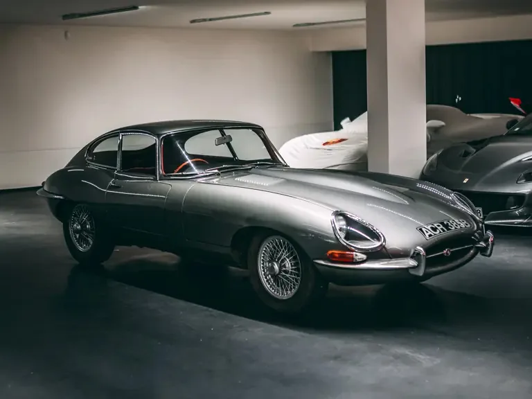
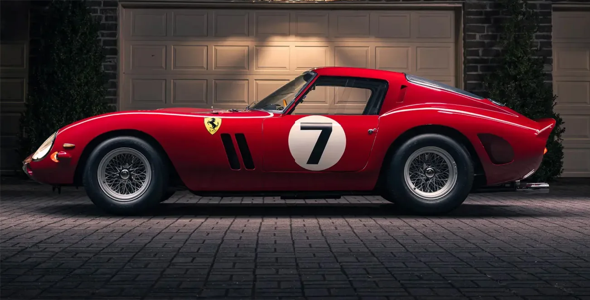

01
‹ Volver al TFG
Bloque 02 de 03
Iconos de la velocidad. La década de 1960
Jaguar E-Type, Ferrari 250 GTO y Lamborghini Miura: tres formas radicalmente distintas de esculpir la velocidad.
Los años 60 fueron una década de optimismo tecnológico tras la reconstrucción de posguerra. El milagro económico de Alemania e Italia hizo crecer una nueva clase media con poder adquisitivo, mientras Estados Unidos vivía el auge del consumo y convertía el coche en símbolo de estatus. La carrera espacial y el alunizaje del Apolo 11 impulsaron una estética 'Space Age', y en paralelo surgió una cultura pop y juvenil —Swinging London, hot rods, muscle cars— que exigía coches con personalidad propia, no solo fiabilidad.
El diseño automovilístico de la época se dividió en dos corrientes complementarias. Por un lado, la aerodinámica científica: el paso de las aletas ornamentales estadounidenses a soluciones como la cola Kamm, donde la forma la dictaba el viento y no el ojo. Por otro, el organicismo o biomorfismo, que trasladó formas de la naturaleza —cuerpos animales, curvas humanas— a la carrocería para darle 'alma' al coche. Esa tensión entre matemática y sensualidad es el puente hacia esta trilogía: el Jaguar E-Type como diseño zoomórfico, un felino agazapado, y el Ferrari 250 GTO y el Lamborghini Miura como diseño antropomórfico, con formas que evocan el cuerpo humano.
A continuación, la trilogía de la velocidad: Jaguar E-Type, Ferrari 250 GTO y Lamborghini Miura.
Los tres iconos

02Ferrari 250 GTO
La cumbre del diseño con motor delantero, antes de la era del motor central. El carrocero Sergio Scaglietti esculpió su carrocería de aluminio literalmente 'a ojo', convirtiendo un coche de carreras en escultura. 03
03